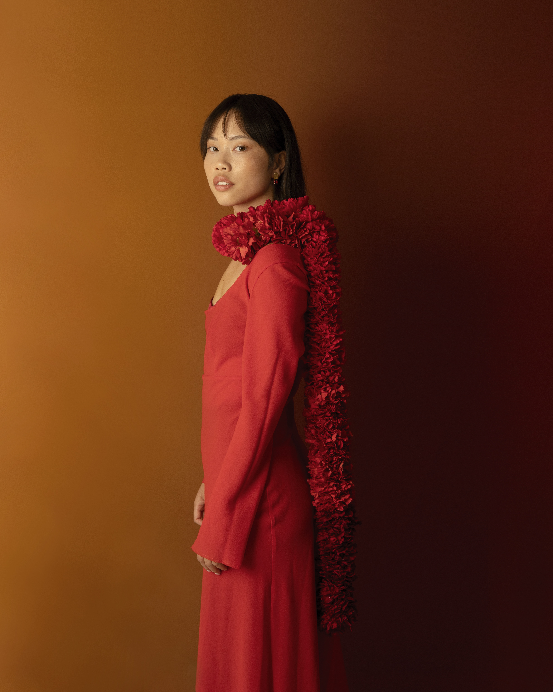
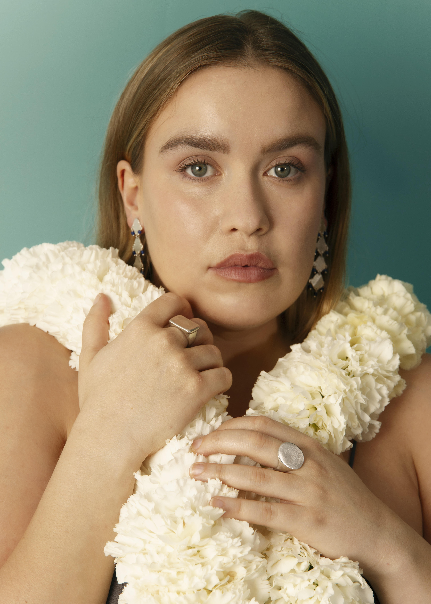
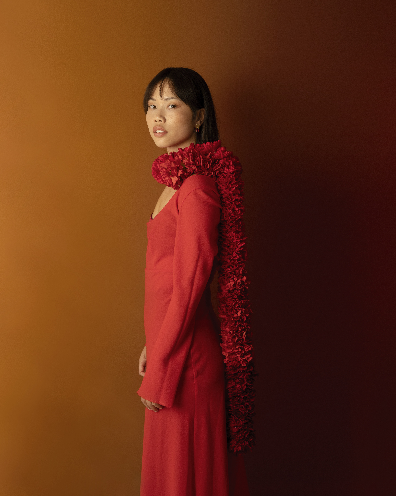
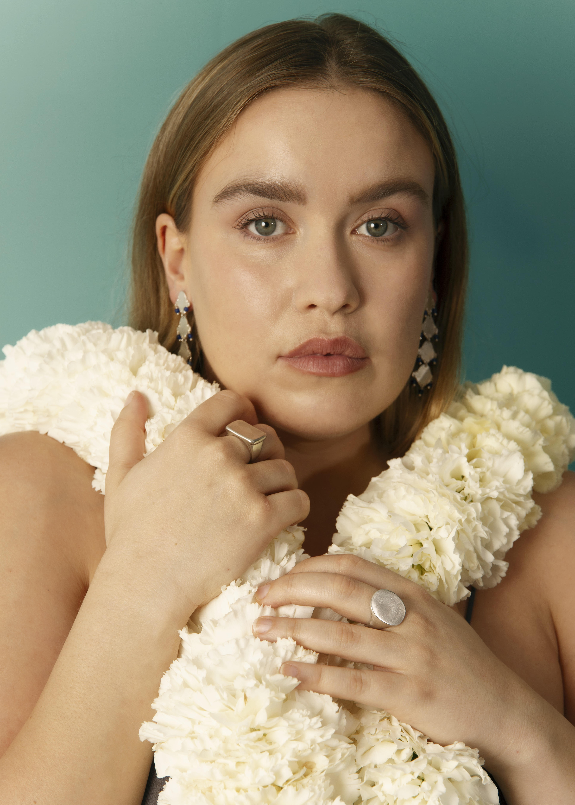

Comunicación y Dirección Creativa /
BROT
2025
Para el relanzamiento de Brot, Júlia Ventura (fundadora de la firma) y yo nos unimos para desarrollar una nueva dirección creativa, produciendo el shooting y diseñando el set desde cero. La dirección artística la realizó la fotógrafa Eli Penya. Tanto para el relanzamiento como para la colección GOLA (SS25), he llevado a cabo una consultoría y toda la estrategia de comunicación, de content y de PR.

 


